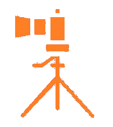

Lancer la simulation

CANOPEX-32
SIMULATEUR APPAREIL PHOTO
🎯 Comment ça marche ?
🎚️
Règle les
3 paramètres
à droite :
ISO
,
Vitesse
et
Ouverture
avec les boutons + et −
📸
Appuie sur le
gros bouton rond
en bas à droite pour déclencher et voir le résultat
🔍
Lis le
bilan
qui s'affiche : il te dit ce qui va, ce qui cloche, et pourquoi
🏆
L'objectif : trouver les
bons réglages
pour une photo nette et bien exposée !
C'est parti mon kiki ! 🚀
CANOPEX-32
DIGITAL SLR
M
ISO
25600
▪ 0.0 EV
WB
AUTO
-3
+3
1/2s
▁▂▄▆█▆▃
f/
32
Déclencher pour tester
Vitesse
1/2 s
−
+
ISO
25600
−
+
Ouverture
f/32
−
+
65%
AUTO
RAW·47
ANALYSE DE LA PRISE DE VUE
MAUVAIS PARAMÈTRES DE PRISE DE VUE
— toucher pour fermer —